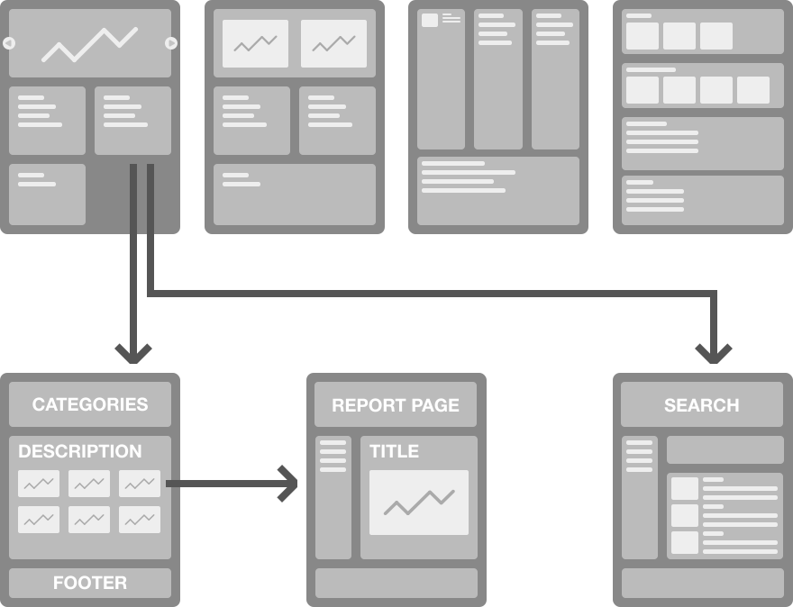
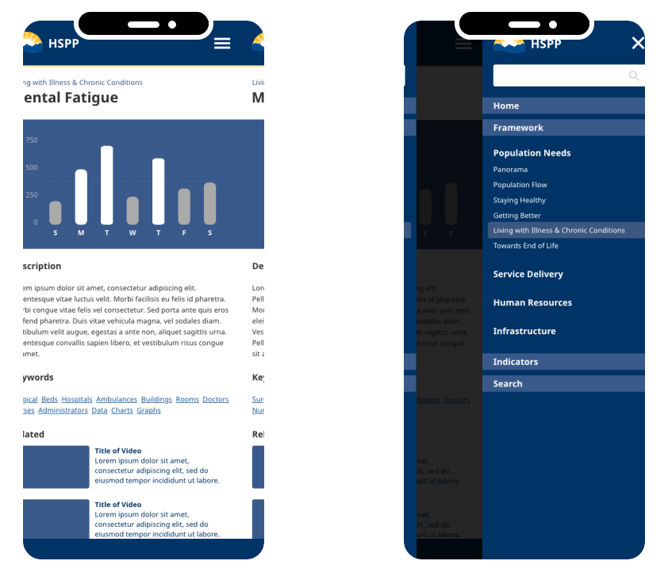
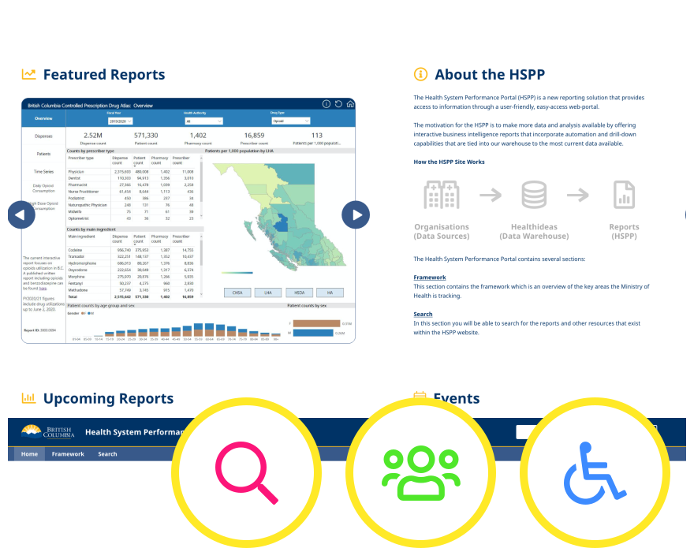

Health Sector Performance Portal
Ministry of Health, BC Government
- Type of Work
- Information Architecture
- Interface Design
- Information Design
- Date
- Jan, 2020 to Aug, 2020
Executives and business analysts throughout the BC Ministry of Health needed a better way to view key health metrics. In late 2019 a team at the Ministry was assembled to create a website to solve this problem. CGI was hired to do the design and development of the project. I did the UX/UI portion working closely with the client to insure the design met the needs of the business and end users. The project successfully launched in Summer, 2020 and is continually being improved.
1 Co-Design Sessions
Multiple whiteboarding sessions were conducted to explore different layout options and design ideas.
2 Information Architecture
Whiteboard sketches were photgraphed and used as the basis for greyscale wireframes.
3 Hi-Fidelity Mockups
Approved wireframes were turned into finished mockups designed for mobile, tablet, and desktop.
4 Quality Assurance & Usability Testing
Built app compared to mockups to insure accuracy. Usability testing conducted and improvements made.
“David was instrumental in creating an efficient design for HSPP. He was fully engaged when it mattered and always eager to add value. He drove us to streamline UX, coached the team on usability testing, and contributed to team communications and overall effectiveness. HSPP is a better product because of his passion and hard work.”
Samantha Magnus, Director
Ministry of Health, BC Public Service
Along with the HSPP site design I also created a number of user journeys which provide an easy way to grasp the routes patients take through the BC health system. These journeys act as a jumping off point to health reports.